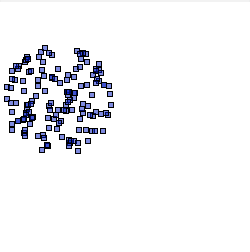

<msl> <image> <merge> <layer> <new w='250' h='250' rgb='255,255,255' /> <for_point_circle v='PNT' r='55' c='55,95' n='175'> <draw_rectangle_f pos='%[PNT]' dims='5,5' rgba='0,25,195,127' rgb_stroke='0,0,0' stroke_width='0.8' /> </for_point_circle> </layer> </merge> </image> <display /> </msl>